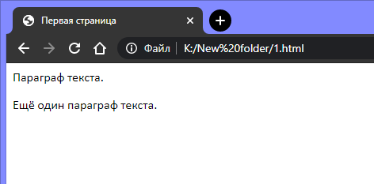
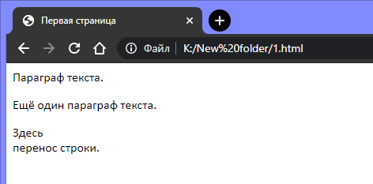

Прогресс завершения курса:
Основы HTML
Параграфы
Создать отдельный параграф текста очень просто: нужно всего лишь добавить открывающий и закрывающий теги <p> и </p>.
<html>
<head>
<title>Первая страница</title>
</head>
<body>
<p>Параграф текста.</p>
<p>Ещё один параграф текста.</p>
</body>
</html>
Результат:

Перенос строки
Используйте тег <br>, чтобы добавить в документ отдельную строку текста, когда нет надобности создавать новый параграф:
<html>
<head>
<title>Первая страница</title>
</head>
<body>
<p>Параграф текста.</p>
<p>Ещё один параграф текста.</p>
<p>Здесь <br> перенос строки.</p>
</body>
</html>
Открыв Ваш HTML-файл в браузере, Вы увидите, что параграф теперь разбит на две строки:

Тег <br> не требует закрывающего тега.